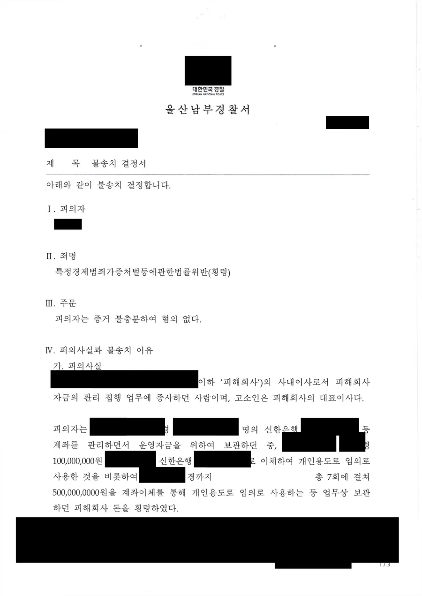

핵심 결과
같이 사업하던 사람에게 고소당하는 일은 드물지 않습니다.
돈이 오간 사실 자체는 다툼이 없는데, 그 돈의 성격을 두고 정반대로 주장하기 때문입니다.
이 사건에서 의뢰인은 회사 자금 5억 원을 인출했다는 이유로 고소당했습니다.
금액이 5억 원이었기 때문에 업무상횡령이 아니라 특정경제범죄가중처벌등에관한법률위반(횡령)이 적용되는 구간이었습니다.
법무법인 우린은 청산 합의가 실재했다는 사실을 객관적 자료로 입증했습니다.
사건은 재판까지 가지 않고 경찰 단계에서 혐의없음 불송치로 종결됐습니다.
| 구분 | 내용 |
|---|---|
| 사건 분야 | 특정경제범죄가중처벌등에관한법률위반(횡령) |
| 문제된 금액 | 약 5억 원, 7회에 걸쳐 인출 |
| 당사자 관계 | 사내이사(의뢰인)와 대표이사(고소인), 사실상 동업 |
| 핵심 쟁점 | 청산 합의의 존재와 불법영득의사 |
| 결정적 자료 | 청산 협의 통화 녹취록 |
| 최종 결과 | 혐의없음 불송치 (증거불충분) |
어떤 사건이었나
의뢰인은 회사의 사내이사였습니다.
회사 자금의 관리와 집행을 맡고 있었습니다.
고소인은 그 회사의 대표이사였고, 두 사람은 사실상 동업 관계였습니다.
관계를 정리하는 과정에서 의뢰인은 회사 계좌에서 여러 차례에 걸쳐 돈을 인출했습니다.
합계 5억 원가량이었습니다.
의뢰인은 청산 합의에 따라 받기로 한 돈이라고 생각했습니다.
고소인의 주장은 달랐습니다.
청산 금액이 맞지 않아 논의가 중단된 상태였는데 임의로 가져갔다는 것입니다.
그렇게 고소장이 접수됐습니다.
이 사건이 위험했던 이유
- 이득액이 5억 원이어서 특정경제범죄가중처벌법이 적용되는 구간이었습니다.
- 이 법이 적용되면 법정형이 크게 올라가 실형 위험이 현실화됩니다.
- 의뢰인이 회사 자금을 관리하는 지위에 있었다는 점은 다툼이 없었습니다.
- 돈을 인출해 개인 용도로 사용한 사실도 다툼이 없었습니다.
- 고소인은 초기 조사에서 합의가 없었다는 취지로 진술했습니다.
객관적 사실만 나열하면 횡령의 외형이 그대로 갖춰지는 사건이었습니다.
회사 돈을 개인 계좌로 옮기면 무조건 횡령인가요
아닙니다. 횡령죄가 성립하려면 불법영득의사가 인정되어야 합니다.
불법영득의사는 타인의 재물을 자기 것처럼 권한 없이 처분하려는 의사를 말합니다.
돈이 이동한 사실만으로는 이 요건이 채워지지 않습니다.
그래서 동업 분쟁에서는 늘 같은 지점에서 갈립니다.
권한 없이 가져간 것인지, 합의에 따라 받은 것인지입니다.
여기서 한 가지 더 짚어야 할 것이 있습니다.
특정경제범죄가중처벌등에관한법률 제3조는 이득액이 5억 원 이상일 때 적용됩니다.
즉 5억 원이라는 숫자는 단순히 큰 금액이 아니라, 적용 법률 자체를 바꾸는 기준선입니다.
이 구간에 들어오면 초범이라도 실형 가능성을 진지하게 검토해야 합니다.
| 수사기관이 확인하는 것 | 의미 |
|---|---|
| 합의의 존재 | 인출에 대한 동의나 약정이 있었는지 |
| 합의의 내용 | 금액과 방법이 특정되어 있었는지 |
| 자금의 흐름 | 인출 시점과 금액이 합의 내용과 맞는지 |
| 사후 정황 | 인출 직후 상대방이 어떻게 반응했는지 |
| 은닉 여부 | 감추려 했는지, 드러내놓고 처리했는지 |
돈이 오간 사실은 대개 다툼이 없습니다. 승패는 그 돈의 성격을 무엇으로 입증하느냐에서 갈립니다.
해결 전략
1. 진술이 아니라 기록으로 다퉜습니다
동업 분쟁은 양쪽 진술이 정면으로 충돌합니다.
이때 합의가 있었다고 생각했다는 말을 반복하는 것으로는 수사기관을 설득할 수 없습니다.
의뢰인이 보관하고 있던 통화 녹취를 확보해 녹취서로 정리했습니다.
그 안에는 의뢰인이 청산 해지를 제안하고 고소인이 동의하는 취지로 대답하는 내용이 담겨 있었습니다.
이어서 고소인이 입금받을 계좌를 직접 지정하는 대화가 있었습니다.
회계사무실 확인 결과 문제가 없다는 취지의 대화까지 이어졌습니다.
계좌를 지정한다는 것은 돈이 넘어가는 것을 전제로 한 행동입니다.
이 대목이 사건의 성격을 바꿨습니다.
2. 7회 인출을 하나의 정산 흐름으로 재구성했습니다
7회에 걸쳐 인출했다는 사실은 언뜻 불리합니다.
나누어 빼돌린 것처럼 읽히기 때문입니다.
그래서 각 인출의 시점과 금액이 청산 협의에서 논의된 내용과 어떻게 대응하는지를 표로 정리했습니다.
몰래 옮긴 돈이 아니라 합의된 금액을 순차적으로 정산한 흐름이라는 점을 드러냈습니다.
3. 고소인 진술의 변화를 정확히 짚었습니다
고소인은 1회부터 3회 조사까지는 청산 논의가 중단됐다는 취지로 진술했습니다.
그런데 이후 조사에서 청산에 대한 합의가 있었고 의뢰인이 그 방법에 따라 인출한 것이 맞다고 진술을 바꿨습니다.
고소인 스스로 합의의 존재를 인정한 이상, 권한 없는 처분이라는 전제가 무너집니다.
이 변화가 어느 시점에 왜 발생했는지를 앞서 제출한 녹취 내용과 함께 정리해 제출했습니다.
| 대응 항목 | 준비한 내용 |
|---|---|
| 객관적 증거 | 청산 협의 통화 녹취록 확보 및 녹취서 작성 |
| 자금 분석 | 7회 인출 내역과 청산 합의 내용의 대응 관계 정리 |
| 진술 분석 | 고소인 진술 변경의 시점과 의미 정리 |
| 법리 주장 | 불법영득의사 부존재, 민사상 정산 분쟁이라는 점 강조 |
결과
경찰은 제출된 녹취록을 확인했습니다.
고소인이 청산 해지 제안에 동의하는 취지로 대답하고, 입금할 계좌를 지정하며, 회계 확인 결과 문제가 없다는 대화를 주고받은 사실이 확인됐습니다.
고소인 본인도 조사 과정에서 청산 합의가 있었음을 인정했습니다.
최종 결과
경찰은 의뢰인의 행위가 당사자 사이의 합의 또는 고소인의 동의하에 이루어진 것으로 판단했습니다.
법인 자금을 권한 없이 처분했다거나 불법영득의사가 있었다고 보기 어렵다고 보았습니다.
증거불충분, 혐의없음 불송치로 사건이 종결됐습니다.
검찰 송치 없이 경찰 단계에서 끝났습니다.
계약서가 없는데 합의를 증명할 수 있나요
가능합니다. 동업은 대개 말로 시작하기 때문에 계약서가 없는 것이 오히려 일반적입니다.
수사기관도 이 점을 알고 있습니다.
그래서 계약서 대신 정황을 봅니다.
통화 녹취, 메신저 대화, 상대방이 지정한 계좌번호, 세무나 회계 담당자와 주고받은 연락, 정산 내역서 초안 같은 것들입니다.
특히 상대방이 한 행동이 중요합니다.
계좌를 알려주는 행위, 금액을 확인하는 행위, 회계 처리를 문의하는 행위는 모두 합의를 전제로 한 행동입니다.
이런 자료는 시간이 지나면 사라집니다.
통화 녹음은 저장 기간이 지나면 삭제되고, 메신저 대화는 기기를 바꾸면 사라집니다.
경찰 조사 일정이 잡힌 뒤에 찾기 시작하면 늦습니다.
자주 묻는 질문
| 질문 | 답변 |
|---|---|
| 회사 돈을 개인 계좌로 옮기면 무조건 횡령인가요? | 아닙니다. 정당한 권한이나 합의에 따른 것이라면 불법영득의사가 인정되지 않습니다. |
| 금액이 5억 원이면 왜 더 무거운가요? | 이득액 5억 원 이상이면 특정경제범죄가중처벌등에관한법률 제3조가 적용되어 법정형이 크게 올라갑니다. |
| 계약서가 없으면 합의를 증명할 수 없나요? | 녹취, 메신저, 상대방이 지정한 계좌, 정산 자료 같은 정황증거로 입증할 수 있습니다. |
| 상대방 몰래 녹음한 통화도 증거가 되나요? | 대화 당사자가 직접 녹음한 것은 통신비밀보호법 위반이 아니며 증거로 사용할 수 있습니다. |
| 고소인이 진술을 바꾸면 어떻게 되나요? | 진술 변경의 시점과 경위가 사건 판단에 중요한 영향을 미칩니다. |
| 경찰 단계에서 끝낼 수 있나요? | 가능합니다. 불송치 결정이 나면 검찰 송치 없이 종결됩니다. |
| 언제 변호사를 만나야 하나요? | 첫 조사 전입니다. 첫 진술이 이후 절차 전체의 기준이 됩니다. |
결론
동업자 사이의 돈 문제는 형사와 민사가 뒤엉켜 있습니다.
정산으로 풀어야 할 문제가 횡령이나 배임 고소로 넘어오는 경우가 많습니다.
고소장에 적힌 금액이 크다고 해서 그대로 처벌로 이어지는 것은 아닙니다.
핵심은 그 돈이 합의에 따라 오간 것임을 무엇으로 보여주느냐입니다.
이 사건은 흩어져 있던 대화 기록을 제때 찾아 정리했기 때문에 경찰 단계에서 마무리될 수 있었습니다.
본 사례는 의뢰인 보호를 위해 일부 내용을 각색했으며, 처분 결과는 실제와 같습니다.
사무장·상담실장 없이 변호사가 직접 상담합니다
횡령·배임 고소는 첫 조사에서 방향이 결정됩니다.
준비 없이 조사에 들어가면 나중에 뒤집기 어렵습니다.
법무법인 우린은 강성수 변호사가 직접 상담하고, 자료 확보와 진술 준비, 의견서 작성까지 직접 진행합니다.
동업 정산 문제로 고소를 당했거나 고소를 준비 중이라면, 지금 남아 있는 자료부터 확인해야 합니다.
이 글은 일반적인 법률 정보 제공을 위한 자료이며, 개별 사건의 결과를 보장하지 않습니다. 구체적인 대응은 사실관계와 증거에 따라 달라질 수 있습니다.